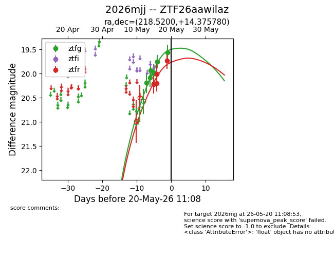
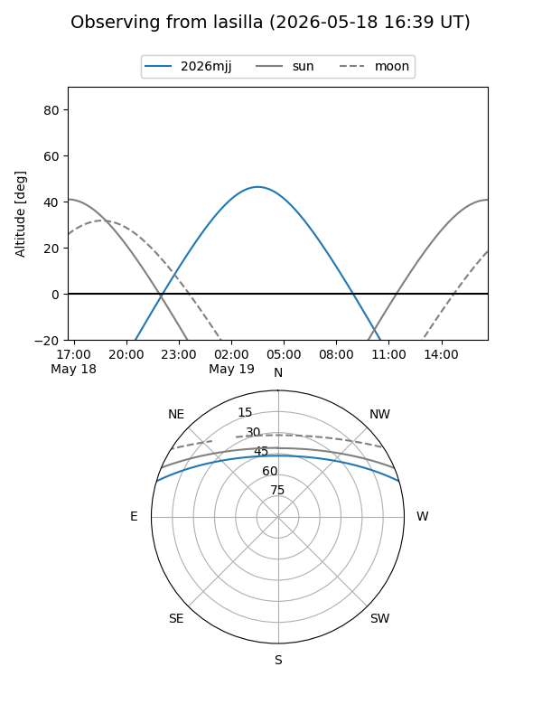
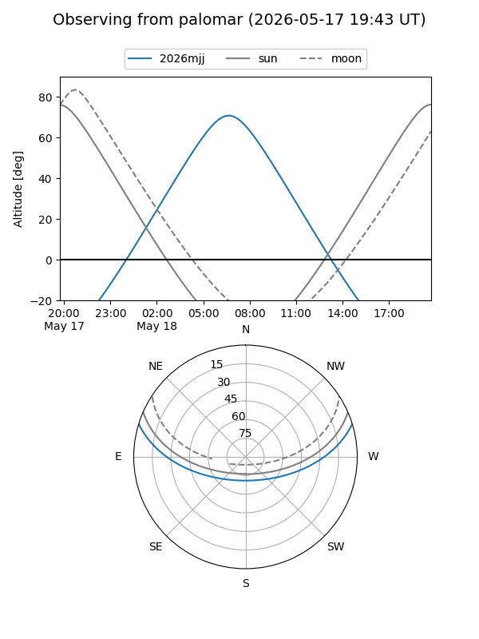
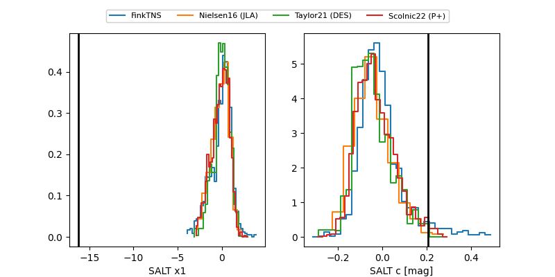

2026mjj
Target 2026mjj at 2026-05-20 11:15
Aliases and brokers:
FINK: link
Lasair: link
ALeRCE: link
TNS: link
YSE: link
alt names
ZTF26aawilaz (ztf,fink_ztf)
2026mjj (tns,yse)
Coordinates:
equatorial (ra, dec) = 218.5200,+14.37578
equatorial (HMS+DMS) = 14:34:04.79,+14:22:32.81
galactic (l, b) = (10.0340,+62.91183)
Flags:
Photometry:
last ztfg=19.56, ztfr=19.73
8 ztfg, 5 ztfr detections
Lightcurve

Visibility


Additional plots
